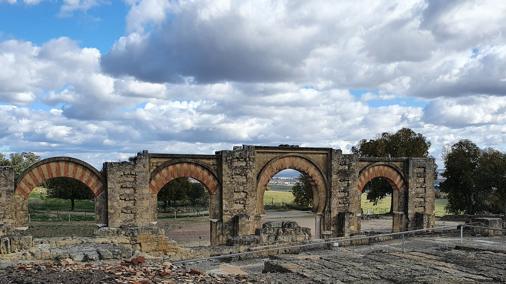
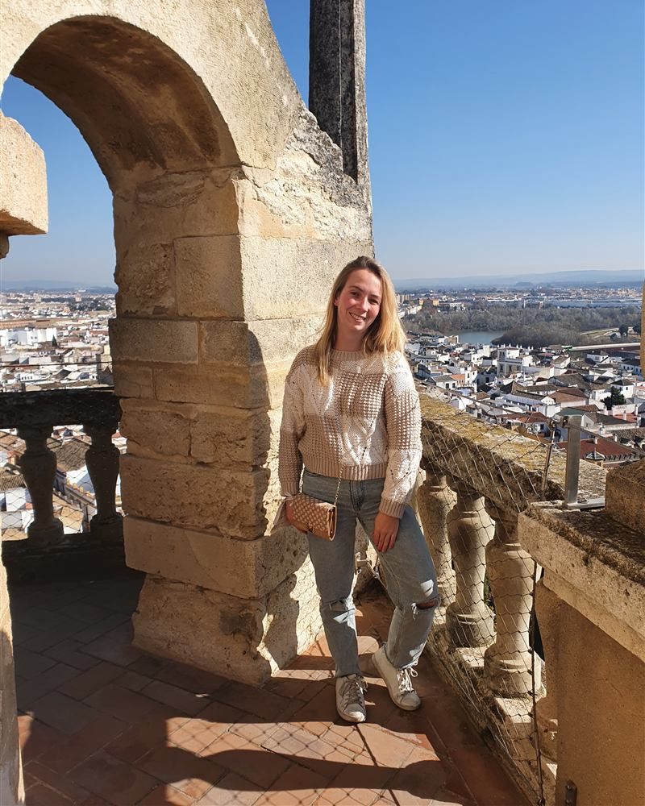
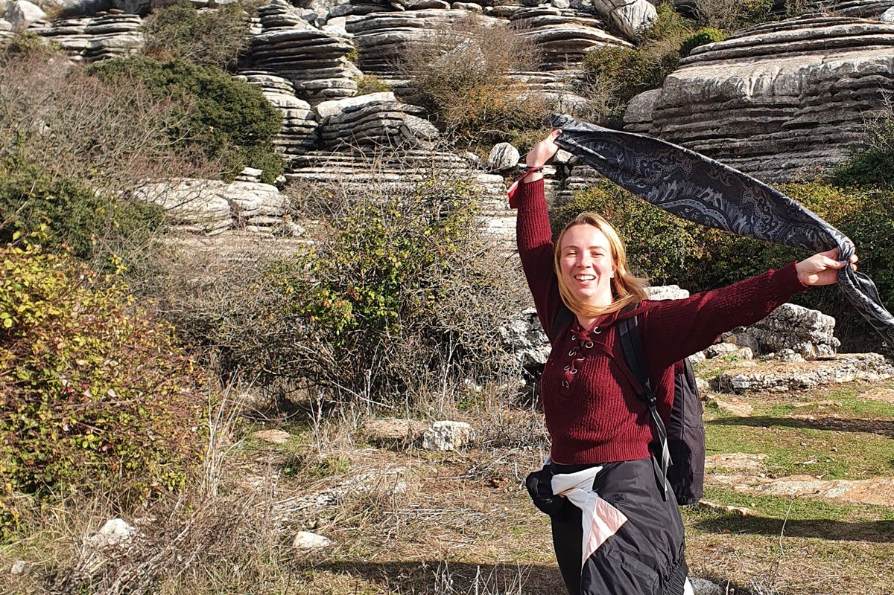
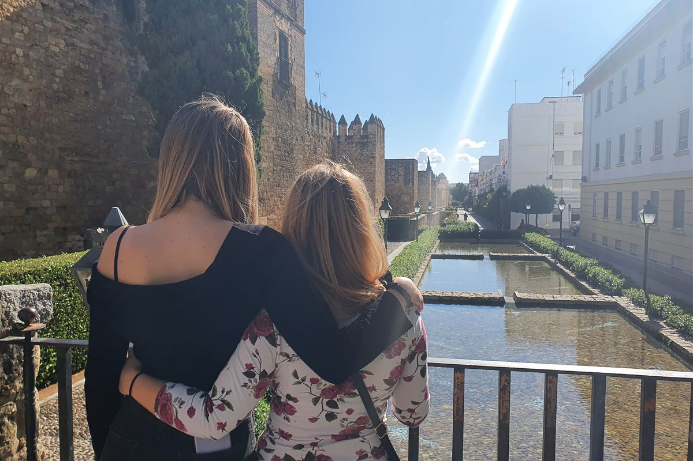

Revisión de redes
En Instagram y Facebook reviso tu perfil, tus publicaciones, el tono y tus respuestas, y te comparo con tres competidores. Recibes un informe con las cinco recomendaciones clave y lo comentamos juntos.

entre idiomas y culturas
Te ayudo a llegar a clientes alemanes en Instagram y Facebook, con contenido en alemán que suena natural y no traducido.
Para quién: hoteles · actividades y excursiones · restaurantes →
por llegadas, aprox. 12,4 %
por gasto, 11,8 %
turistas internacionales en 2025
Muchos alemanes reservan pronto: la temporada de reservas anticipadas es en invierno. Pero en 2026 muchos también reservaron tarde. Por eso: hazte visible pronto y sigue visible.
Directo y honesto, sin frases hechas.
Qué buscan los alemanes en sus vacaciones.
Información clara y completa.
En Instagram y Facebook reviso tu perfil, tus publicaciones, el tono y tus respuestas, y te comparo con tres competidores. Recibes un informe con las cinco recomendaciones clave y lo comentamos juntos.
Objetivos, temas, tono y trato en alemán, hashtags y los momentos en que reservan los clientes alemanes. Recibes un documento de estrategia y un calendario editorial para los primeros tres meses.
Publicaciones en alemán, nuevas o a partir de tus contenidos actuales: adaptadas a los clientes alemanes, no solo traducidas. Mínimo 3 meses, después mes a mes.
Respondo comentarios y mensajes en alemán en un día laborable y te paso las solicitudes de reserva. Fines de semana y festivos, a convenir. Informe mensual; mínimo 3 meses.
Instagram y Facebook; LinkedIn, TikTok y anuncios bajo petición.

Muchos huéspedes alemanes reservan con meses de antelación. Me encargo de que ya te conozcan entonces: en alemán y con la información que buscan antes de reservar.

Senderismo, kayak o clases de cocina: presento tus experiencias para que los turistas alemanes las entiendan y las reserven antes del viaje.

Carta, horarios y respuestas a las reseñas: te ayudo a atraer a los clientes alemanes en su idioma, antes de que se sienten a la mesa.
Mi especialidad es el turismo y la hostelería, pero todos los servicios sirven también para otros negocios. Cuéntame qué necesitas.
Hablemosaprox. 200–350 €/mes
aprox. 300–600 €/mes
aprox. 600–1.200 €+/mes
Tu propuesta, tras la primera llamada.

¡Encantada!
Mi español empezó en Perú, durante un viaje de siete meses por el mundo después del bachillerato. Después estudié International Business y, de septiembre de 2021 a febrero de 2022, viví en Córdoba con Erasmus. Allí aprendí lo distinto que se siente un país cuando vives en él y no solo estás de vacaciones.
Soy alemana: el alemán es mi lengua materna, y además hablo español, inglés y francés. Antes trabajé en recursos humanos en una empresa internacional, preparando contenidos para personas de distintos países. En 2026 me formé en redes sociales, contenidos y marketing online, y así nació Puentina.
Puentina significa «pequeño puente»: entre idiomas, culturas y personas. Trabajo en remoto, paso temporadas en España y siempre hablas directamente conmigo, sin intermediarios.
Sí. Trabajo en remoto y hablamos por videollamada. Así puedo acompañar a negocios de toda España.
Sí. El alemán es mi lengua materna. No solo traduzco: adapto cada texto a lo que esperan los clientes alemanes.
Sí. Cada servicio se puede contratar por separado. Un buen comienzo es la revisión de redes: después sabrás qué necesitas de verdad.
Las fotos reales de tu negocio funcionan mejor. Te digo qué imágenes faltan y cómo hacerlas bien con el móvil. No hago sesiones de fotos in situ.
No. Soy freelance: hablas siempre directamente conmigo, sin intermediarios.


Clientes alemanes
Con la checklist compruebas tú mismo en 10 minutos qué funciona ya y qué falta. 12 puntos, gratis y sin registro.